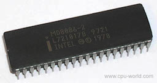
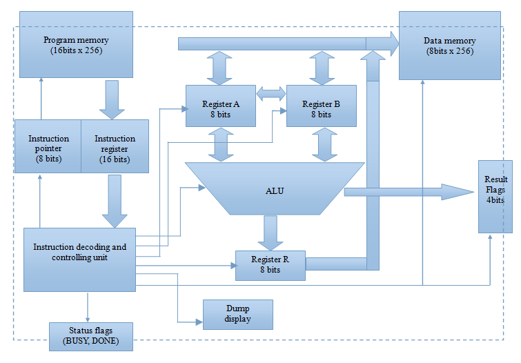

A microprocessor is physicaly a semiconductor chip with lots of pins to connect to other chips but what makes it special is that it can execute certain instructions. Here execution means that when certain electrical signals are presented at the inputs of the microprocessor, is produces some appropriate signals at its output pins. How does a microprocessor do that, or how can we design our own microprocessor to understand the inner working? This posts discusses how to do just that. While doing so, we will also design an instruction set for the microprocessor, and demonstrate how programs are written, and then made to get executed by the processor.
Introduction:
Before going into the details, let us assume that we know about the building blocks of digital logic circuits. In particular, we know what a register is (its also called a latch), how memory is organized and accessed, and what an arithmetic & logic unit is, or how it works. I will try to touch upon each of thse block in short.
Register
Register is the fancy name of a latch of certain size. Well a latch is essentially a D-flipflop. So, basically registers are banks of flip-flops of certain bit widths. Commonly a microprocessor has quite a few registers- some are called general purpose that could be used for programming by the programmer, and some are called special purpose that serve special functions and normally can not be used by the programmer. It is almost a tradition to name the general purpose registers as A, B, C etc, and special purpose registers with their descriptive name e.g, IP (Instruction Pointer), IR (Instruction Register), F (Flags) etc.
Memory
Memory, almost always called RAM, is a temporary storage of data and program. In implementation, they could be an array of JK flipflops arranged in a rectangular manner. Word width is the count of bits the memory can store under a single addressable unit. So for example. if we have a (16-bit x 256) memory, its word size is 16-bit and the storage capacity is 256 words. More elaborately, we could store 256 data in it, with each data being 16 bits. However, we could not read/write individual bit of a data, we have to read/write the whole data item. Further, it will most likely have 16 pins for transferring of data, 8 pins for address selection, and few more control pins for indicating read/write operations etc.
Arithmetic and Logic Unit
Often called the workhorse of a micropriocessor, an ALU is a logic circuit that can perform certain operations. At the simplest level, it should be capabale of adding/subtracting two numbers, doing bitwise and/or/not opearations. If one wants to build an ALU, what he needs are: adder/subracter chip, logic gates, and a multiplexer to control which operation is going to take place.

Design Considerations:
The first thing that I considered in designing the MPU is bus width, it is 8-bit. What it means that all the general purpose registers, the word-width of ALU etc is 8-bit. The second point is the width of each instruction, 8-bit is way too low since each instruction embodies quite a few bit of information for the MPU. The choice was made it to have 16-bit. The third major decision is the architecture- whether to have separate memories for program and data. In this design I chose to have separate memories. Once these decisions are taken, some more points follow: how many general purpose registers to have, how many flag bits to have, and whether or not to have any registers to feed/buffer the ALU.
In light of these decisoins, if we look at the block diagram above, I have two general purpose registers (A and B), a buffer register (R) to hold result of an operation before it could be written to memory. Our program memory is 16-bit X 256, and data memory is 8-bit x 256. I also have IP (Instruction Pointer) and IR (Instruction Register). The value of IP indicates the address of the instruction in the program memory that is going to be executed next. The value of IR is the current instruction that is being executed currently by the MPU (more precisely by the decoding/controlling unit). The block that reads Instruction decoding and controlling unit is the brain of the MPU. This block itself could be, for argument’s sake considered as an MPU! Nonetheless, in real MPU the decoding unit could be programmed (by the MPU designer) and its appropriately called microprogamming. In our case, what exactly goes inside the decoding unit is dependent on the instruction format disscussed later. The simplest decoder/controller is a table (implemented in a memory) whose address lines are driven by the opcode of an instruction, and data values are control signals for all other blocks.
To indicate some conditions/errors I included some flags which read only from outside.
Note: The MPU does not intend to access outside off-chip memory for program/data at this stage. However, the on-chip program and data memories are readliy accessible from outside. So, if we want to write a program, or preload some data, we’d just have to write to the respective memory. To achieve this the CPU has two input control lines DataMem and ProgrMem.
###Instruction Set Design:
An entire instruction has this format:
<4-bit opcode><4-bit indicator> <8-bit argument>
The leftmost 4 bits indicate which of the sixteen instructions is being denoted.
Below is the list of the instructions, their opcodes and description.
| Opcode(binary) | Nmemonic | Description |
|---|---|---|
| 0000 | NOP | No operation, wastes a cycle |
| 0001 | STOP | Stops/hatls execution of the program |
| 0010 | DUMP | Dumps the contents of program/data memory |
| 0011 | LOAD | Loads a constant value or data from data memory |
| 0100 | STOR | Stores a constant value or register value to data memory |
| 0101 | XCHG | Swaps the value of registers A and B |
| 0110 | JMP | Jumps the execution to a location in program memory |
| 0111 | JMPE | Jumps if the values of register A and B are equal |
| 1000 | ADD | Adds a constant or memory value to a register value |
| 1001 | SUB | Subtracts a constant or memory value from a register value |
| 1010 | INC | Increments the value of a register by one |
| 1011 | DEC | Decrements the value of a register by one |
| 1100 | AND | Bitwise AND between a constant or memory value with register value |
| 1101 | OR | Bitwise OR between a constant or memory value with register value |
| 1110 | NOT | Bitwise NOT, 1’s complement of a register value, fixed value or memory value |
| 1111 | XOR | Bitwise AND between a constant or memory value with register value |
Next 4 bits act as flag or indicator about what is the last 8-bit part. The meanings are defined as below:
| Indicator | Description |
|---|---|
| 0000 | Ignore the argument |
| 0001 | The argument value is a memory address |
| 0010 | The argument value is a constant data |
| 0011 | Unused |
| 11xx | Unused |
The indicators meaning could however be different depending on the instruction itself. This is done as an exeception for DUMP the instruction, where 0001 indicates dump the contents of the program memory and 0010 meaning dump the content of the data memory.
The last 8-bit part of an instruction can have multiple meaning depending on the flag/indicator bits. This part could indicate a memory address, a constant data value, or nothing.
Flag Registers
Each bit of the Result flag register has a meaning associted. They are:
- Zero Flag – equals to 1 if the value in R is zero
- Carry Flag – equals to 1 if there is any carry out in an addition operation
- Sign Flag – equals to 1 if the most significant bit of R is 1
- Error Flag – equals to 1 if there is an error in executing the program
The other two flags are: BUSY and DONE. BUSY goes active while the MPU is executing program. DONE goes active when the program is successfully finished executing (without any error).
Example Instructions:
Below are some example instructions that the MPU should be able to execute. The symbol $ indicates hexadecimal vlaue.
| Instruction | Description |
|---|---|
| LOAD $4 | Loads the value 4 to register A |
| LOAD [$4] | Loads the value at data memory location 4 to register A |
| STOR [$5] | Stores the value of register A into data memory location 5 |
| ADD $12 | Adds 12 to the value of register A, result is in register R |
| ADD [$10] | Adds data at data memory location 10 to the value of register A, result is in register R |
| INC | Increments the value of register A, result is in R |
| DEC | Decrements the value of register A, result is in R |
| SUB $4 | Subtracts 4 from value of register A, result is in R |
| XCHG | Register B gets value of A, register A gets value of R |
| JMP $16 | Jumps unconditionally to program memory address 16 |
| JMPE $16 | Jumps to program memory address 16 if registers A and B have same values |
Assembler Design:
This little MPU, no joking has its own assember- for converting a program written in forms of nmemonic into machince code, so that the MPU can execute. The assembler, in theory can support more instructions that the MPU, it just has to map those extra instructions into the supported ones. For instance, it could support MULT for multiplication, though the MPU does not have any such instruction. The assembler when sees a MULT, just has to do its magic and make a loop using JMP/JMPE instruction to implement the multiplication operation.
Though the assembler I designed does not support any MULT, it does however adds few features, for example storing a constant data to a memory location (note the MPU only supports storing from A to memory). Below is a table showing examples of supported features.
| Assembly example | Mapped nmemonics |
|---|---|
| Load $80 into address $0 | LOAD $80 SOTR [$0] |
| Add $3F to address $0 and store to result into address $1 |
LOAD [$0] ADD $3F XCHG STOR [$1] |
| XOR value at address $2 with $AA and store the result into address $3 |
LOAD [$2] XOR $AA XCHG STOR [$3] |
| Subtract $80 from address $1 and store the result to address $6 |
LOAD [$1] SUB $80 XCHG STOR [$6] |
Full details of the assembler could be found in the next post.
Implementation:
The MPU is implemented in VHDL (a language to describe hardware to create!) I used Cadence to compile the model, and finally floor-planned the chip as a 20-pin setup using Cadence Encounter. The final result is shown:

Tests:
The CPU was not fabricated, but was tested for functionality with Cadence Design Vision and found fully functional as expected.